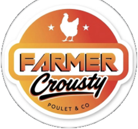
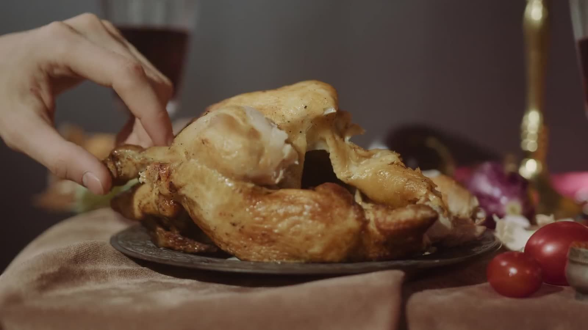
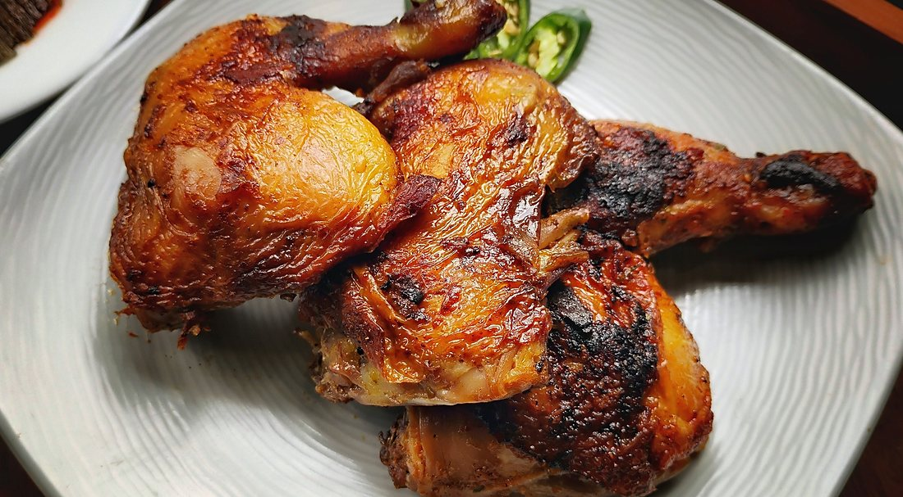
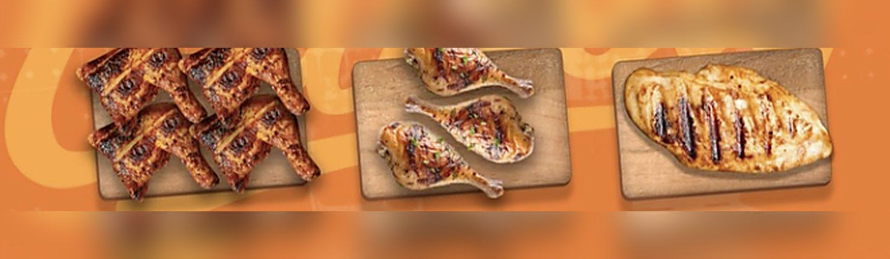
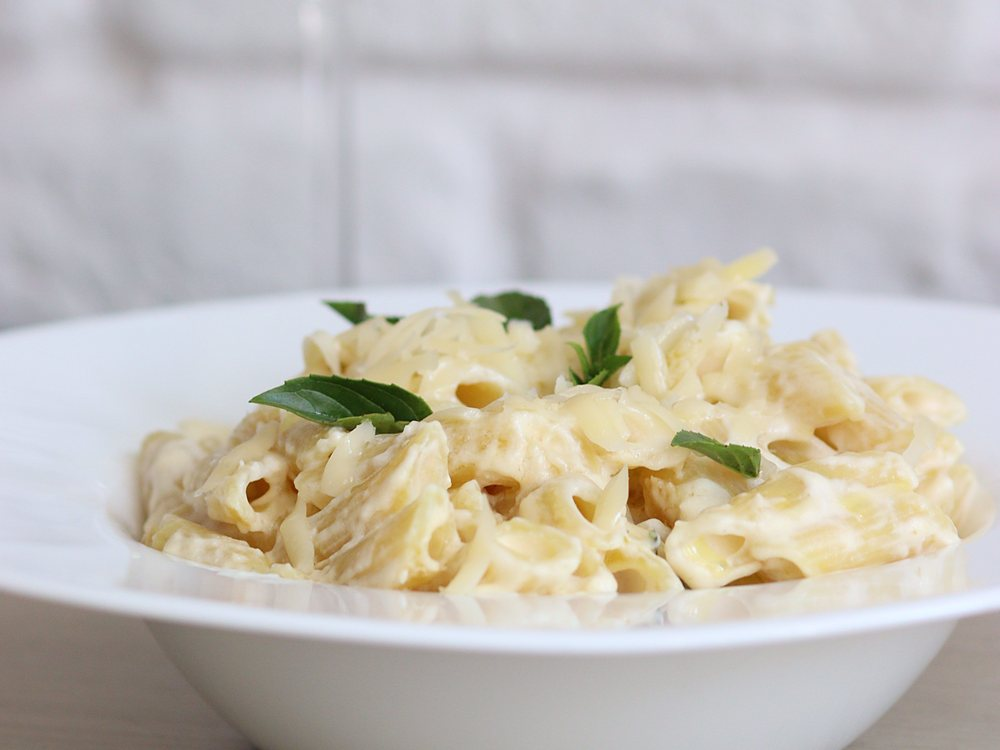

Du poulet mariné, rôti à la braise et découpé devant vous. Avec une barquette au choix et une sauce maison.

Quelques habitués de la maison. Faites glisser, puis ouvrez la carte entière.

Ce site ne dépose aucun cookie publicitaire. On aimerait seulement mesurer la fréquentation, de façon anonyme, pour savoir ce qui intéresse nos visiteurs. Vous pouvez refuser, le site fonctionne exactement pareil. En savoir plus